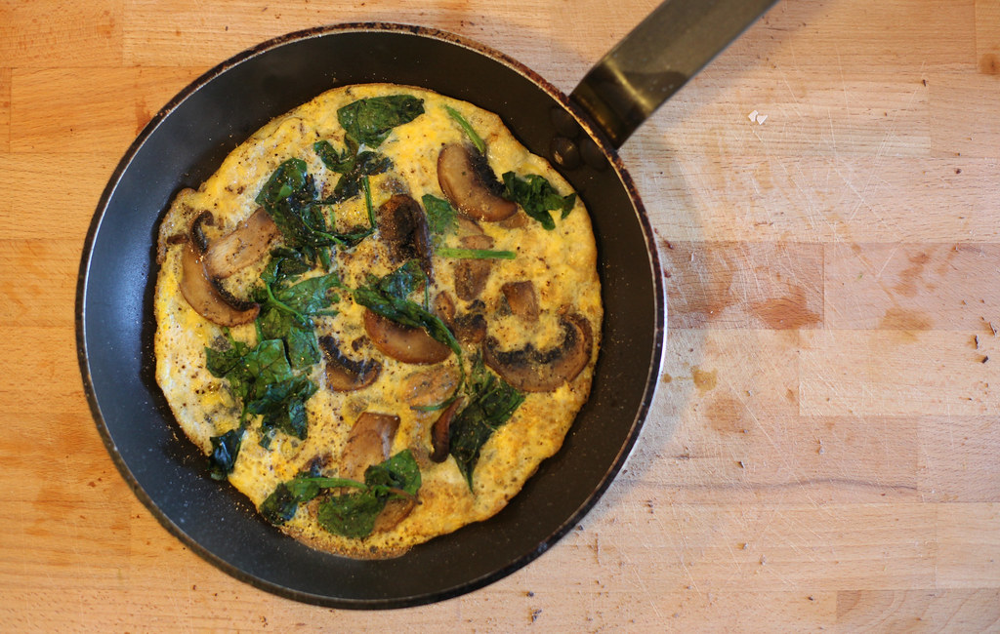

Mushroom Omlette

This is a mushroom omlette recipe
Follow these steps to make your own mushroom omlette!
Ingredients:
- 1 tbsp rapeseed oil
- 1 large handful mushrooms (about 80g/3oz), sliced
- 1 tbsp ground paprika
- 1 handful baby spinach
- 2 free-range eggs, beaten
- salt and freshly ground black pepper
Recipe steps:
- Heat the oil in a non-stick frying pan. Cook the mushrooms for 2–3 minutes, or until they are golden-brown. Add the paprika and spinach, and stir so the spinach wilts. Remove the vegetables from the pan.
- Beat the eggs in a bowl, season with salt and freshly ground black pepper, then pour the beaten egg into the pan. Cook, gently drawing in the sides of the omelette with a spatula, allowing the uncooked egg to fill the gaps and set.
- When the omelette is almost cooked, spoon the mushroom and spinach mixture back in, then flip over one half and slide onto a plate.
Home